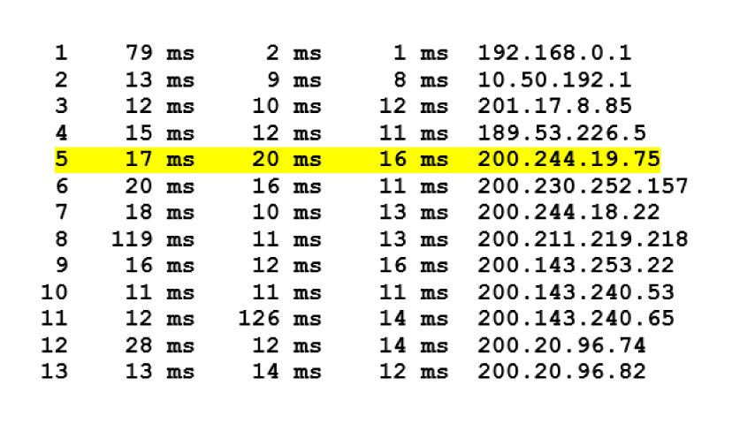

Perda, atraso fim a fim, vazão
A influência dos parâmetros de redes nas aplicações
Confira agora os principais pontos sobre os parâmetros de redes.
Perda
Outro parâmetro importante que pode impactar a operação de uma aplicação de redes é a perda de pacotes. Vamos analisar como ele pode ocorrer?
Se a intensidade de tráfego for próxima a zero, as chegadas de pacotes serão poucas e bem espaçadas, sendo improvável que um pacote que esteja chegando encontre outro na fila. Com isso, o atraso de fila médio será próximo a zero e todos os pacotes serão processados, sem perdas.
Agora, imagine a situação na qual a intensidade de tráfego é próxima da capacidade de transmissão. Com certeza, haverá intervalos de tempo em que a velocidade de chegada excederá a capacidade de transmissão (por causa das variações na taxa de chegada do pacote) e uma fila será formada durante esses períodos.
Se você aumentar a taxa de chegada do pacote o suficiente, de forma que a intensidade do tráfego exceda capacidade de transmissão, verá a fila aumentar ao longo do tempo.
Como a capacidade da fila (buffer) é finita, logo um pacote pode chegar ao roteador e encontrar o buffer cheio. Sem espaço disponível para armazená-lo, o roteador terá que descartá-lo, isto é, ele será perdido.
Um sistema final considera que o fenômeno da perda é um pacote que foi transmitido para o núcleo da rede, sem nunca ter emergido dele no destino.
Vamos analisar o impacto da perda na aplicação
Se a aplicação que estiver sendo utilizada não admitir perda, como uma transferência de arquivos, o pacote perdido irá impactar o funcionamento da aplicação e, portanto, esse problema deve ser corrigido, normalmente, retransmitindo o pacote faltante.
Mas existem aplicações que toleram perda, tipicamente, as aplicações de streaming. Nesse tipo de serviço, se alguns pacotes forem perdidos, a aplicação não terá prejuízos. Sabe por quê? Os pacotes de dados de uma aplicação de streaming carregam, por exemplo, um conjunto de pixels de um dos frames do vídeo. Se esse pacote não chegar, apenas alguns pixels deixarão de ser reproduzidos e dificilmente o usuário perceberá.
Voltemos ao caso da aplicação que não tolera perda. O desenvolvedor da aplicação precisa implementar alguma técnica de controle de perdas? A resposta é não! Lembra que comentamos que a rede oferece uma infraestrutura de serviços? Então, utilizando a API (socket) correta para a aplicação, os serviços existentes na rede corrigirão a perda de pacotes, assim, o desenvolvedor pode focar na lógica da aplicação porque a rede cuidará da entrega dos pacotes.
Atraso fim a fim
Anteriormente, comentamos sobre os diversos tipos de atrasos, porém, analisamos de forma isolada, pensando no que ocorre entre um nó e outro. Bom, mas é fácil imaginar que entre os sistemas finais, existem vários equipamentos intermediários (roteadores e switches), por onde o pacote trafegará e terá algum tipo de processamento.
Portanto, o pacote transitando do sistema final de origem para o de destino terá gasto determinado tempo, que é o atraso fim a fim, ou seja, a soma de todos os atrasos que o pacote ficou sujeito ao longo do caminho.
Se os atrasos de fila forem desprezíveis, não existirá congestionamento e a aplicação poderá funcionar corretamente. Mas, se os atrasos de fila não forem desprezíveis, os atrasos nos nós se acumulam e resultam em um atraso fim a fim significativo que poderá impactar o funcionamento da aplicação, em especial àquelas que são sensíveis ao atraso.
Saiba Mais
O programa Traceroute (Tracert, no Windows), disponível em qualquer sistema final, permite que possamos verificar o tempo gasto entre cada roteador no caminho e o tempo no sistema final.
O usuário especifica um nome de hospedeiro de destino, e o programa envia vários pacotes em direção ao destino. Durante o caminho, esses pacotes passam por vários roteadores. Quando um deles recebe o pacote, envia de volta à origem uma mensagem contendo o nome e o endereço do roteador. Quando o destino recebe o pacote, também envia uma mensagem à origem, que registra o tempo transcorrido entre o envio e o recebimento da mensagem de retorno correspondente.
A origem registra também o nome e o endereço do roteador, ou do hospedeiro de destino, que retorna a mensagem. Desse modo, a origem pode reconstruir a rota tomada pelos pacotes que vão da origem ao destino e pode determinar os atrasos de ida e volta para todos os roteadores no caminho. Observe a imagem a seguir:

No exemplo mostrado, existem 12 roteadores entre a origem e o destino. Vamos pegar o Roteador 5, que tem o endereço 200.244.19.75. Examinando seus dados, vemos que na primeira das três tentativas, o atraso de ida e volta entre a origem e o roteador foi 17ms. Os atrasos de ida e volta para as duas tentativas seguintes foram 20 e 16ms, e incluem os atrasos que foram abordados, que são o atraso de transmissão, o atraso de propagação, o atraso de processamento do roteador e o atraso de fila.
Como o atraso de fila varia com o tempo, o atraso de ida e volta do pacote n enviado a um roteador n pode, às vezes, ser maior do que o do pacote n+1 enviado ao roteador n+1. Verificando os tempos apresentados na imagem, é possível verificar que isso ocorreu em alguns momentos.
Também é fácil verificar a variação de atraso com o Traceroute. Como o programa dispara três pacotes para cada destino, percebemos que dificilmente teremos os três pacotes com o mesmo atraso.
Vazão
Outra medida de desempenho é a vazão fim a fim. Considere a transferência de um arquivo grande do hospedeiro A para o hospedeiro B. A vazão instantânea a qualquer momento é a taxa (em bits/s) em que o hospedeiro B está recebendo o arquivo. Se o arquivo consistir em F bits e a transferência levar T segundos para o hospedeiro B receber todos os F bits, a vazão média da transferência do arquivo é F/T bits/s.
Comentário
Para algumas aplicações, como a telefonia via internet, é desejável ter um atraso baixo e uma vazão instantânea acima de algum valor. Para outras aplicações, como transferência de arquivo, o atraso não é um fator importante, mas é recomendado que a vazão seja a mais alta possível.
A vazão depende não somente das taxas de transmissão dos enlaces ao longo do caminho, mas também do tráfego oriundo de outros sistemas finais. Pode acontecer de um enlace com uma alta taxa de transmissão, como um cabo submarino, ser o gargalo para uma transferência de arquivo, considerando que, no mesmo momento que você está realizando um download, muitos outros tráfegos estão passando pelo mesmo cabo submarino, sobrecarregando o enlace e os equipamentos que controlam a entrada dos dados no enlace.